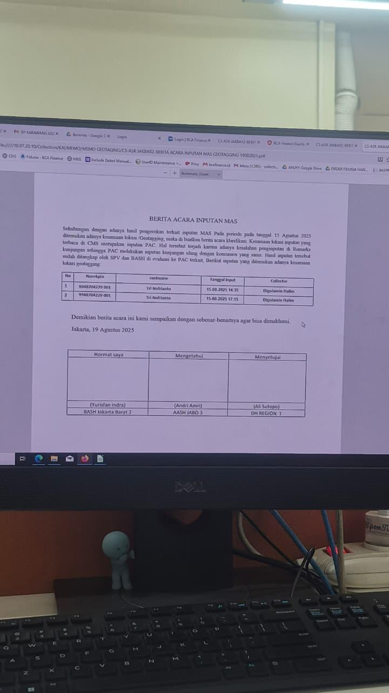
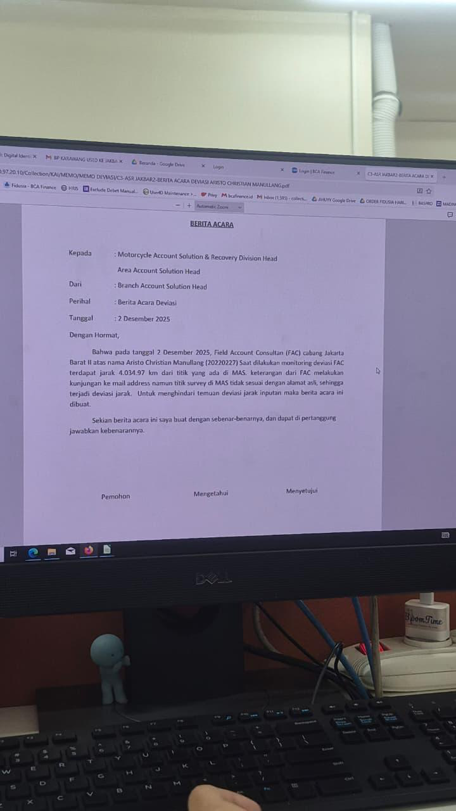
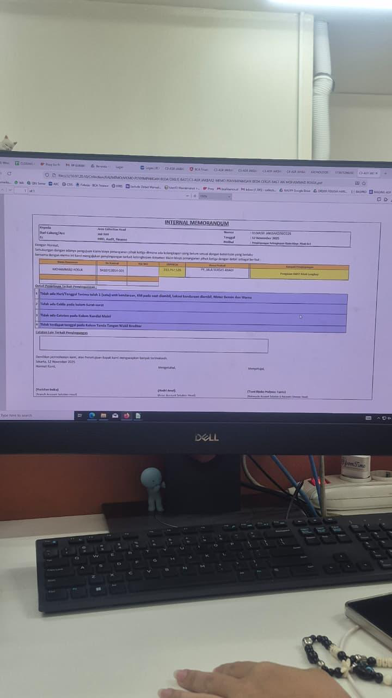
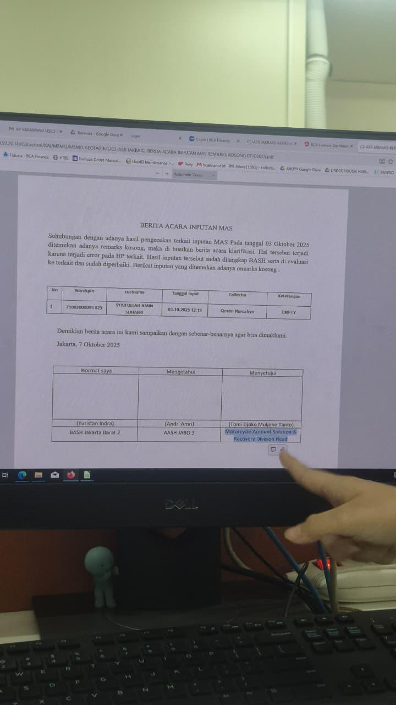
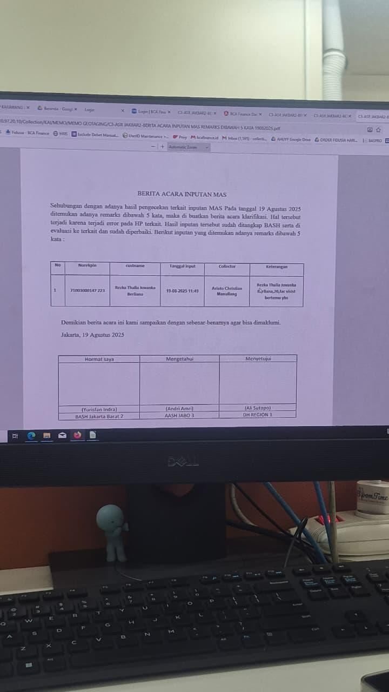
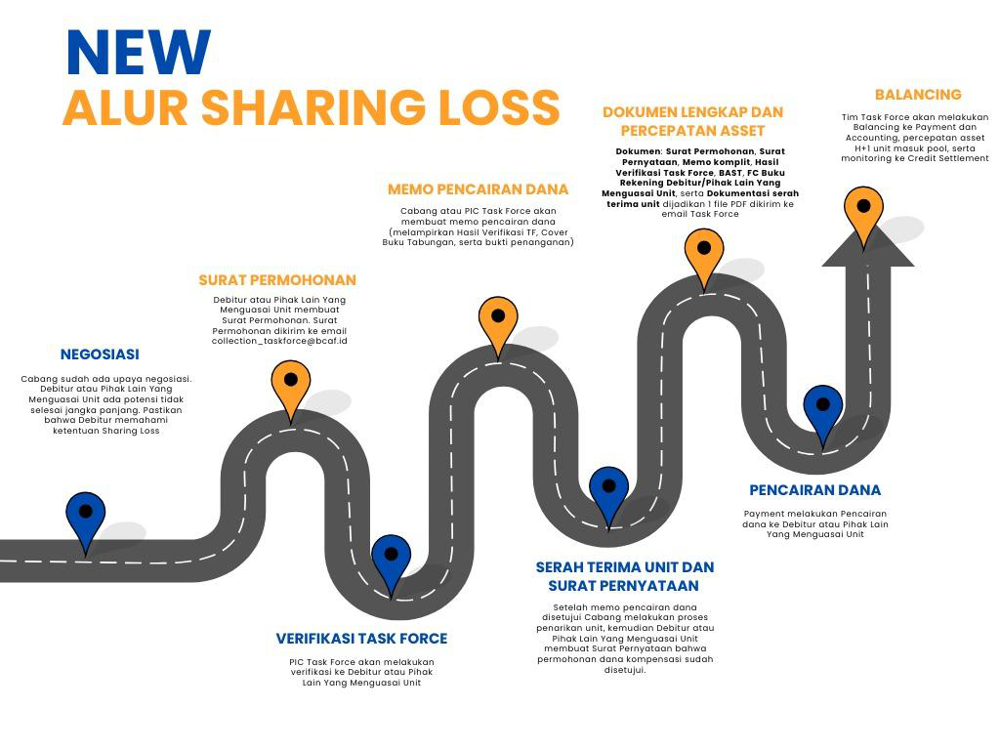

Flow interaktif penagihan — dari konsumen nunggak pertama kali hingga penyelesaian akhir, dilengkapi SK/SE resmi dan landasan hukum POJK.
Gambaran umum, fungsi, dan keterkaitan ASR dengan unit kerja lainnya
Account Solution and Recovery adalah divisi penagihan BCA Finance yang bertugas menangani konsumen yang mengalami keterlambatan pembayaran angsuran kendaraan. ASR berfungsi memulihkan piutang perusahaan sekaligus memberikan solusi kepada konsumen.
| Unit Kerja | Hubungan dengan ASR |
|---|
| Area | Nama AASH |
|---|---|
| Jabo 1 | Ricka Nazarudin |
| Jabo 2 | Rudi Setiawan |
| Jabo 3 | Andri Amri |
| Jabar | Yuda Nugraha |
| Jatim 1 | Farid Rudiana |
| Jatim 2 | Dickta Aris |
| Jateng 1 | Deni Efrido |
| Jateng 2 | Andri Armayadi |
| Sumbagsel | Andre Victory |
| Sumbagut 1 | Ari Suprianto |
| Sumbagut 2 | Andi Idham Khalid |
| Kalimantan | Daldiri Zainin |
| Sulawesi | Yudha Prawira |
Program kolaborasi di mana Marketing ikut melakukan penagihan pada account tertentu. Data CPRM tidak ada di MAS — BASH harus input manual. ASR ikut follow-up konsumen CPRM dan mengikuti flow Marketing.
Istilah-istilah penting yang digunakan dalam kegiatan operasional ASR sehari-hari
Konsumen yang menunggak kembali ke bucket sebelumnya. Contoh: konsumen OVD 80 hari hanya membayar 1 angsuran → OVD menjadi 50 hari → kembali dari FAC 3 ke FAC 2.
Aliran konsumen yang berpindah ke bucket selanjutnya akibat tidak membayar. Contoh: konsumen OVD 60 hari tidak bayar → OVD menjadi 61 → berpindah dari FAC 2 ke FAC 3.
Perbandingan antara account yang berhasil diselesaikan dengan seluruh beban di bucket pada periode tertentu.
Target Marketing = jumlah yang harus terjual/direalisasikan. Target ASR = jumlah amount yang boleh menunggak. Contoh: jika target ASR Rp 10M dan total menunggak Rp 40M → ASR harus berhasil menagih Rp 30M.
4 Parameter grading:
Grade: A (>4.75–5) | B (>2.75–4.75) | C (>1–2.75) | D (<1)
Dibuat AS Support berdasarkan histori realisasi 28 bulan, tunggakan & kolektibilitas:
Parameter: pernah OVD >60/90 hr, tarikan non-WO, account WO, WO ter-recovery, poin kategori kasus
NPF digunakan sebagai patokan aturan DP minimal di POJK No. 35/2018
Bukti serah terima kendaraan saat pengamanan unit. Masa berlaku 1 hari (mempertimbangkan jarak lokasi pengamanan ke pool). Jika >1 hari → wajib buat memo penyimpangan kronologis pool.
Klik setiap tahap untuk melihat detail penanganan
Penanganan via telepon & WhatsApp untuk konsumen overdue awal
Catatan: Sampling PTP otomatis melalui form penilaian di sistem; sampling CBC dilakukan manual melalui Excel.
| Indikator | Bobot |
|---|---|
| Opening | 15% |
| Konfirmasi | 15% |
| Informasi / Solusi | 10% |
| Intonasi | 10% |
| Empati | 10% |
| Persuasi | 15% |
| Product Knowledge | 10% |
| Temuan | 25% |
| Magic Word | 5% |
| Closing | 5% |
| KPI | Bobot |
|---|---|
| Sample Call | 30% |
| Kalibrasi | 15% |
| Kehadiran / Kedisiplinan | 15% |
| Report Finding | 15% |
QA bertugas monitoring kualitas penanganan agent, mengukur performa secara periodik, mengidentifikasi & menganalisa performa, serta memberi bimbingan agar agent tetap sesuai SOP.
Kunjungan lapangan ke rumah/kantor konsumen overdue 10–90 hari
Jumlah layer ditentukan ASR Support; BASH/AASH bisa ajukan perubahan dengan persetujuan HO.
FAC konfirmasi ke konsumen, lapor Korwil
Korwil cetak ST di Financore, konfirmasi ke BASH
FAC bertemu konsumen & unit — validasi fidusia, foto full body
Kirim ke pool terdekat, bawa BAST pink + ST kembali ke cabang
Admin pool cek & input ke CSIS, lalu repo di Financore
Korwil/admin ajukan Biaya Tarikan (BT) via ABC
FAC Motor hanya 2 layer (tidak ada FAC 3 terpisah seperti mobil). SP I berlaku 10 hari (OVD >15 hr), SP II berlaku 10 hari (OVD >25 hr). Wajib registrasi bukti pengiriman SP di Joget.
Read LKP (Lembar Kerja Penagihan) Batch 1 di MCS — otomatis dikirim dari HO
Absen fingerprint di kantor maks jam 08:30
Briefing pagi bersama BASH dan Korwil
Report singkat ke BASH/Korwil, kemudian request LKP Batch 2
Kunjungan sesuai LKP yang di-assign — minimal 10 LKP, wajib sesuai lokasi di LKP
Absen pulang fingerprint di kantor. Jika ada LKP belum selesai, dilanjut setelah absen pulang
Close task setelah semua LKP selesai — maksimal jam 20:00
| KPI | Target | Bobot |
|---|---|---|
| Penyelesaian LKP MOM | 70% | 40% |
| Penyelesaian LKP EOM | 70% | |
| Bucket (11-30) | Sesuai Memo | 30% |
| Flow to 31-60 | Sesuai Memo | 30% |
| KPI | Target | Bobot |
|---|---|---|
| Penyelesaian LKP MOM | 70% | 40% |
| Penyelesaian LKP EOM | 70% | |
| Bucket (31-90) | Sesuai Memo | 20% |
| Flow to >90 | Sesuai Memo | 20% |
| BTAR (bayar non-current) | Sesuai Memo | 10% |
| BTCA (bayar current) | Sesuai Memo | 10% |
| Indikator | Target | Bobot |
|---|---|---|
| MCS (UNV, PTP, BCO) | 30% | 30% |
| MCS (Tidak bertemu) | 30% | 30% |
| Distribusi SP | 100% | 40% |
| Indikator | Target | Bobot |
|---|---|---|
| MCS (UNV, PTP, BCO) | 30% | 30% |
| MCS (Tidak bertemu) | 30% | 30% |
| Distribusi SP | 100% | 40% |
Penanganan kasus berat — pelacakan intensif, OVD 91+ hari
Cek data OVD & review kronologis DAS–FAC
Internal: Kunjungi semua alamat, terbitkan ST — dapat dikeluarkan kapanpun oleh BASH
Eksternal: Pilih BHJP, terbitkan Surat Kuasa (SK) jika OVD >90 hari. SK berlaku 14 hari, perpanjang max 2×
Input hasil MAS min. 3 kunjungan/hari, evaluasi kinerja BHJP
Tidak semua pilihan dapat diberikan ke semua konsumen — wajib analisa terlebih dahulu sebelum memutuskan solusi yang tepat.
Pelancaran — Konsumen membayar seluruh hutang yang tertunggak. Setelah pelancaran, status kembali ke current/lancar.
Pelunasan — Konsumen membayar lunas seluruh tanggungan di BCAF: utang pokok, bunga berjalan, denda, dan biaya lainnya.
Penarikan Mobil — Mengamankan unit fidusia BCAF yang berada di tangan konsumen, kemudian dilakukan proses lelang.
Prepayment — Konsumen membayar parsial dari jumlah tunggakannya, minimal cukup untuk keluar dari bucket NPL.
Program BCAF untuk meringankan beban konsumen — tersedia 3 pilihan mekanisme:
Perpanjang Tenor — Memberikan tenor lebih lama sehingga angsuran per bulan lebih kecil. Syarat: hanya untuk konsumen yang mengambil tenor 1–4 tahun (paket reguler).
Libur Bayar — Memberikan jeda/libur pembayaran kepada konsumen dalam jangka waktu tertentu.
Pembayaran Bunga Dulu — Konsumen membayar bunga terlebih dahulu, baru utang pokok — sehingga angsuran di awal lebih ringan.
Program BCAF yang memberikan keringanan denda sebesar 50% bagi konsumen yang melakukan pembayaran current atau lancar.
Teknik pelacakan PAC dengan menggali informasi tambahan dari dokumen kredit nasabah di DMS (Document Management System). Dilakukan dengan meneliti satu per satu dokumen kredit konsumen, misalnya:
Contoh memo penyimpangan yang berlaku untuk FAC & PAC — sumber: Materi OJT 2





| KPI | Target | Bobot |
|---|---|---|
| Penyelesaian LKP (>90–Non WO) MOM | 50% | 35% |
| Penyelesaian LKP (>90–Non WO) EOM | 50% | |
| Bucket (91–120 hari) | Sesuai Memo | 30% |
| Bucket (121–150 hari) | Sesuai Memo | 20% |
| Bucket (151–180 hari) | Sesuai Memo | 10% |
| Bucket (180+ hari) | Sesuai Memo | 5% |
| Indikator | Target | Bobot |
|---|---|---|
| MCS (Unvisited, PTP, BCO) | 40% | 50% |
| MCS (Tidak Bertemu) | 30% | 50% |
| KPI | Target | Bobot |
|---|---|---|
| Create LKP (11–90 hari) | 100% | 10% |
| Bucket (11–90 hari) | Sesuai Memo | 50% |
| Flow (91–120 hari) | Sesuai Memo | 40% |
Proses kerja BASH Motor: MCS 30% (15%), Distribusi SP 100% (25%), Report LKRC 100% (25%), Penyelesaian bucket 11-90 tengah bulan 70% (75%)
Penanganan akun Write Off — koordinasi BHJP, kepolisian, dan ormas
Input data WO (QWO — SK No. 054/SK/DIR/2016) — terima data aging dari AS Support
Lengkapi berkas: Fidusia, PK, Copy BPKB, Dossier Copy
Analisa aging (pemetaan geografis, mail address) & analisa kasus (OSPO, angsuran, awal nunggak)
Kunjungan internal + Pelacakan (cybercoll, QWO, somasi)
Terbitkan SK — koordinasi BHJP + Aparat + Ormas/LSM
Output: Pelunasan → memo kotak → BPKB keluar | atau Pengamanan Unit → pool → lelang (Credit Settlement)
BHJP wajib: PT (Badan Hukum), SIUP/NIB, akta pendirian + SK Menkumham, SDM bersertifikasi SPPI/APPI
📋 Syarat Pelunasan:
🔑 Syarat Pengeluaran BPKB:
💼 Biaya Penanganan Eksternal Recovery:
| Pejabat | Kewenangan |
|---|---|
| Department Head (DH) | ≤ Rp 7.000.000 |
| Division Head | ≤ Rp 35.000.000 |
| BOD | > Rp 35.000.000 |
✂️ Waive Denda Recovery:
| Pejabat | Kewenangan |
|---|---|
| Department Head (DH) | ≤ 25% |
| Division Head | ≤ 35% |
| BOD | ≥ 35% |
Terima data WO Motor dari sistem, lengkapi dokumen (Fidusia, PK, dossier)
Analisa kasus sesuai jenis (Bad Debt, Potential Bad Debt, dll.) dan pemetaan wilayah
Kunjungan internal + skip tracing (cybercoll, somasi, pelacakan ke keluarga/dealer)
Koordinasi BHJP motor, terbitkan SK — berlaku 14 hari, perpanjang max 2×
Output: Pelunasan atau Pengamanan Unit → proses lelang
Target KPI ARC Motor sama dengan ARO Mobil. Monitoring dilakukan oleh Motorcycle Recovery Dept Head.
Akun dihapusbukukan — semua kriteria wajib terpenuhi
Semua WO wajib melalui rekomendasi audit. WO dengan note (tanpa rekomendasi audit) sudah tidak ada.
Dari hari pertama nunggak sampai penyelesaian akhir
Cicilan melewati tanggal jatuh tempo. Sistem mencatat overdue. Data dikirim dari IT setiap pukul 07.00 ke masing-masing divisi.
Agent menghubungi via telepon & WhatsApp. Tujuan utama: dapatkan PTP (janji bayar). Jika bayar → selesai!
FAC 1 kunjungan fisik ke rumah/kantor. Pendekatan ramah — ingatkan dan bantu cari solusi. SP I dikirim jika OVD >15 hari.
Tone lebih serius. FAC 2 ingatkan bahwa unit bisa diamankan. SP II dikirim (OVD >25 hr). Opsi relaksasi angsuran mulai ditawarkan.
Surat somasi dikirim. Peringatan urusan kepolisian. ST dapat diterbitkan untuk tarik unit internal. Roll back masih bisa terjadi.
Kasus dianggap "berat". PAC fokus pelacakan: bedah dossier, RT/RW, dealer, keluarga. SK ke BHJP eksternal diterbitkan (OVD >90 hr, atau <90 hr dengan memo percepatan + approval BOD).
Jika tidak ada pembayaran >3 bulan, konsumen raib, unit tidak bisa diamankan → akun di-WO dengan rekomendasi audit. Masuk Recovery.
Koordinasi BHJP + Kepolisian + Ormas/LSM. Skip tracing digital. Jika unit berhasil: lelang via Credit Settlement. Jika bayar lunas: selesai.
Solusi yang bisa ditawarkan kepada konsumen di setiap tahap
Konsumen membayar seluruh tunggakan sekaligus. Status kembali lancar.
Konsumen membayar sebagian tunggakan — overdue berkurang, bisa roll back ke bucket sebelumnya.
Seluruh tunggakan dibayar namun dicicil bertahap sesuai kesepakatan.
Konsumen melunasi seluruh pinjaman termasuk pokok, bunga, dan denda. BPKB diserahkan.
Unit kendaraan diamankan BCAF. Internal via Surat Tugas, Eksternal via Surat Kuasa ke BHJP.
Restrukturisasi: perpanjang tenor, libur bayar, atau bayar bunga dulu. Syarat: tenor ≤4 tahun, sudah bayar ≥1 tahun, bukan EV.
Konsumen jual unit di OLX dibantu BCAF. Tanpa penalti ET & biaya lelang. FAC dapat insentif 1 tarikan + 1,5% harga jual.
Mobil ditarik + konsumen terima dana kompensasi BCAF. Dimasukkan sebagai kewajiban untuk perbaikan kolektibilitas.
Klik kartu untuk detail keterangan
Pembagian insentif per unit kendaraan yang berhasil ditarik (internal)
Klik untuk melihat kapan memo digunakan dan dokumen yang diperlukan
Tim khusus monitoring, quality control, dan penanganan kasus kompleks lintas fungsi ASR
Tim QA / QC
Tim Solution Center (Solcen)

Tarik data report dari CMS (Collection Management System)
Analisa data — identifikasi temuan geotagging, deviasi, RKH, dan kualitas remarks
Kirim hasil temuan ke grup area masing-masing
AASH / ARH yang cabangnya terkena temuan mengisi Form Konfirmasi dan melaporkan tindak lanjut
| Field | Keterangan |
|---|---|
| Tanggal | Tanggal kejadian / temuan |
| Nama FAC / PAC / ARO | Nama collector yang terkena temuan |
| Indikasi Kasus | Jenis penyimpangan yang ditemukan |
| Hasil Konfirmasi | Penjelasan / klarifikasi dari cabang |
| Bukti Konfirmasi | Screenshot / dokumen pendukung |
| Regional | Region cabang yang bersangkutan |
| Indikator | Ketentuan / Standar |
|---|---|
| Geotagging — diam di 1 titik | Maks 2 jam di lokasi yang sama saat jam kerja |
| Geotagging — PAC di kantor | Maks 3 jam di kantor (lebih dari itu = penyimpangan) |
| Deviasi jarak inputan MAS | Maks 3 km dari alamat konsumen di MAS |
| RKH terisi | 100% — harus selesai setiap hari kerja |
| Min kunjungan PAC/hari | Wajib input minimal 3 kunjungan/hari di MAS |
| Distribusi SP | 100% terkirim sesuai ketentuan |
| Indikator | Standar |
|---|---|
| Geotagging di kantor | Maks 2 jam, maks 4 jam |
| Deviasi jarak | Maks 3 km dari alamat |
| RKH disetor | Jam 09:30 setiap hari |
| Handling per collector | < 3 akun aktif |
| Laporan tarikan | Real-time via sistem |
| KPI | Bobot |
|---|---|
| Sample Call | 30% |
| Kalibrasi Penilaian | 15% |
| Kehadiran | 15% |
| Report Finding | 15% |
| Monitoring Lapangan | 25% |
Tugas-tugas rutin AS Support dalam operasional harian, bulanan, dan administrasi cabang ASR
Salah satu tugas rutin harian AS Support adalah melakukan report pergerakan angka:
AS Support memproses memo promosi karyawan dengan alur:
Dihitung AS Support untuk tarikan internal per bulan berjalan.
📅 Cutoff Data
💵 Besaran Insentif per Unit
| FAC / PAC | Rp 2.150.000 |
| Korwil | Rp 430.000 |
| BASH | Rp 240.000 |
| AASH | Rp 180.000 |
| TOTAL | Rp 3.000.000 |
📊 Rumus A × B (Insentif × Achievement Cabang)
Closing terbagi menjadi 2 periode:
Dilakukan setiap awal bulan untuk update penugasan FAC dan PAC di masing-masing kode POS.
4 Parameter Penilaian:
| Parameter | Bobot |
|---|---|
| Jumlah account TMA cabang | 25% |
| Jumlah account OVD 1–9 hari | 20% |
| Jumlah account OVD 10–30 hari | 25% |
| Jumlah account OVD >30 hari | 30% |
Hasil Grading Kelas Cabang:
| Kelas | Nilai Akhir |
|---|---|
| A | > 4,75 – 5 |
| B | > 2,75 – 4,75 |
| C | > 1 – 2,75 |
| D | < 1 |
Dilakukan dengan beberapa pertimbangan, contohnya memecah cabang Used Car dan non-Used Car.
Dibuat berdasarkan histori realisasi, tunggakan, dan kolektibilitas. Data diambil dari rentang 28 bulan → dimasukkan ke Excel (sudah ada rumusnya).
Parameter penilaian:
Hasil score zona:
| 🟢 Hijau | Poin < 3 |
| 🟡 Kuning | Poin 3–5 |
| 🔴 Merah | Poin 5 |
Dilakukan di tiap awal bulan:
Dibuat berdasarkan titik lokasi inputan vs lokasi yang seharusnya di MAS.
Mengatur berapa SDM yang diperlukan untuk setiap cabang.
Semua Surat Keputusan, Surat Edaran, Memo, dan Instruksi Kerja ASR — klik gambar untuk memperbesar
💡 Teks hijau bergaris bawah di seluruh halaman = informasi berasal dari SK/SE resmi. Klik untuk langsung ke dokumen sumbernya.
"Kitab Suci Leasing" — 5 peraturan yang wajib dipahami. Klik untuk buka detail.
Dokumen yang wajib dibawa saat penagihan dan pengamanan unit
| Dokumen | Singkatan | Fungsi | Jenis | Masa Berlaku |
|---|---|---|---|---|
| Surat Tugas | ST | Pengamanan unit fidusia oleh pihak internal BCAF | Internal | 7 hari, perpanjang 2× |
| Surat Kuasa | SK | Pengamanan unit oleh BHJP eksternal. OVD >90 hr atau memo percepatan (approval BOD) | Eksternal | 7 hr (AS) / 14 hr (Recovery), perpanjang 2× |
| Berita Acara Serah Terima | BAST | Bukti serah terima kendaraan antara konsumen dan FAC/PAC. Beda ceklist = memo penyimpangan | Keduanya | 1 hari (lebih dari 1 hr wajib memo penyimpangan kronologis pool) |
| Sertifikat Fidusia | SK Fidusia | Bukti hukum bahwa kendaraan adalah jaminan fidusia milik BCAF. Kekuatan setara putusan pengadilan | Keduanya | Sesuai kontrak pembiayaan |
| Tabel Angsuran | — | Rincian jadwal angsuran dan sisa kewajiban konsumen | Keduanya | — |
| Sertifikat Profesi Penagihan Indonesia | SPPI | Sertifikasi wajib bagi petugas penagihan/penarikan (termasuk BHJP eksternal) | Keduanya | Sesuai ketentuan OJK/POJK 35 |
| Perjanjian Pembiayaan Kredit | PPK | Kontrak perjanjian kredit antara konsumen dan BCAF | Keduanya | Sesuai kontrak |
| Bukti Somasi | — | Wajib dilampirkan saat pengajuan pendampingan kepolisian (PERKAP 8/2011) — harus sudah kirim 2× | Eksternal | — |